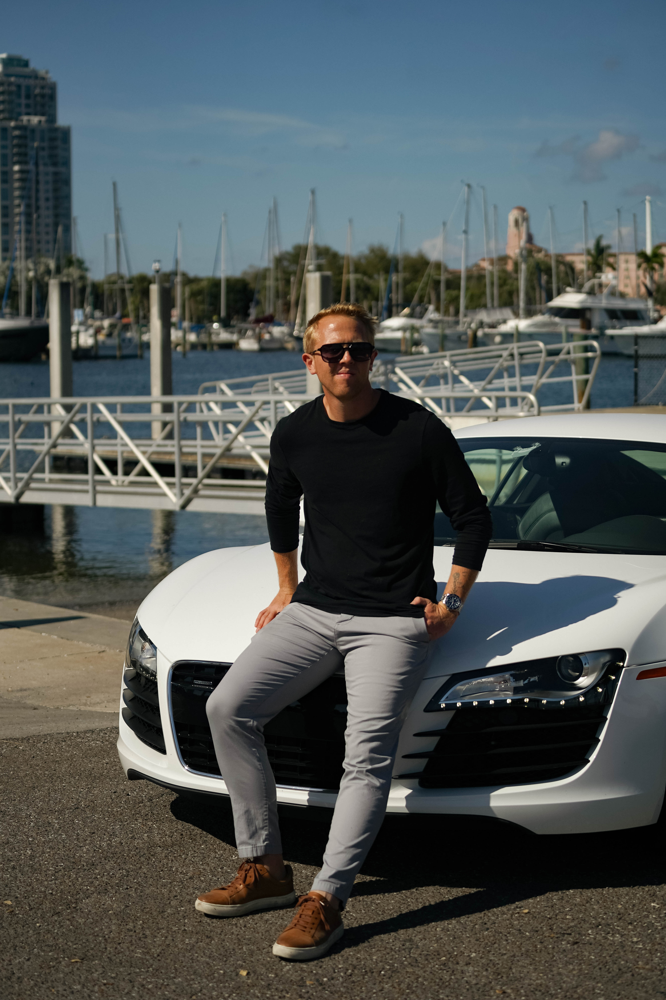
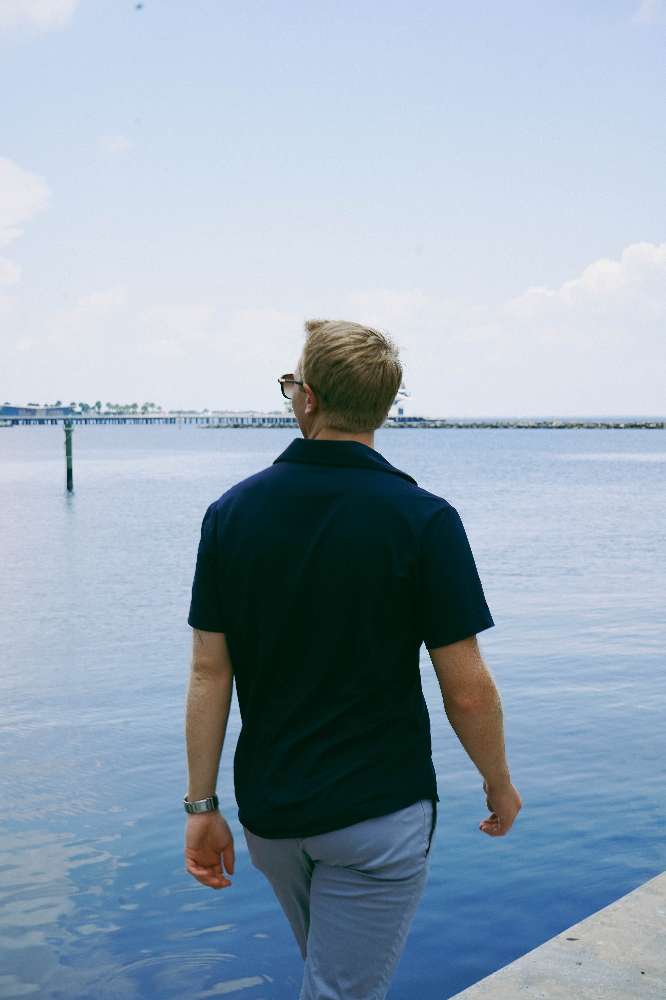

Operator. Investor. Builder. Based in Saint Petersburg, FL.
I started my career in residential brokerage, and it didn't take long to feel that I was in the wrong place. Deal after deal, something was missing. It wasn't the work itself, it was what the work actually built. Every closing added another line to a reputation and another relationship with a client, valuable, but not enough. I wasn't building anything that outlasted the transaction. I wanted more.
So I started laying the groundwork for something bigger: a full-service real estate company built to carry a project through every stage, not hand it off in pieces. Ground-up development. Architecture and design. Sales and leasing. Asset management. One vision, seen through from the first sketch to the closing table and beyond.
I built this company one credential at a time. I earned my broker's license and opened my brokerage. Shortly after, I launched a property management company to protect and grow the assets my clients had entrusted to me. Then I became a Certified Building Contractor (CBC), giving me the ability to build, renovate, and remodel structures up to four stories, hands-on control over the physical outcome, not just the deal on paper.
Investments are where I do my best work. There's a specific kind of satisfaction in putting someone's hard-earned capital to work and handing back more than they expected, and real satisfaction comes from doing that consistently, not once. That consistency comes from local knowledge: knowing the rental and multifamily market block by block, submarket by submarket, how rents move, what a building is actually worth to hold versus sell, and where demand is heading before it shows up in the data. That depth of local insight is what lets me deliver above-average returns again and again.

Kalib is based in Saint Petersburg, FL and serves the Pinellas County market with a deep understanding of its neighborhoods, development corridors, and investment landscape. His primary focus is Pinellas County, with active work across Hillsborough and Manatee counties.
Kalib has served as a board member for the Palmetto Park neighborhood association since 2026, reflecting a commitment to the communities he works and lives in — not just the deals.
When he's not closing deals, Kalib is based in St. Petersburg with his fiancée, Alyssa, and their dog, Chance. You'll find them at Cars and Coffee most weekends, out on the water with friends, or hosting a party, always themed, never optional.

"AN OPERATOR'S MINDSET. EVERY DEAL, START TO FINISH."
I help investors and owner operators acquire, reposition, and optimize commercial and multifamily real estate. With experience across brokerage, property management, and redevelopment, I bring the full picture to every conversation — focused on execution, not just the transaction.